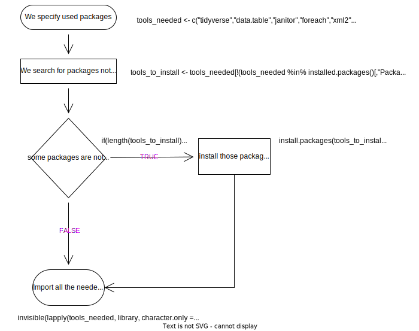
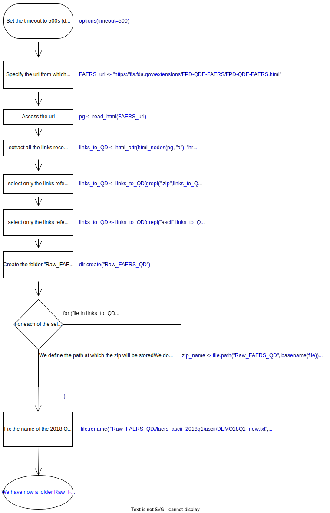
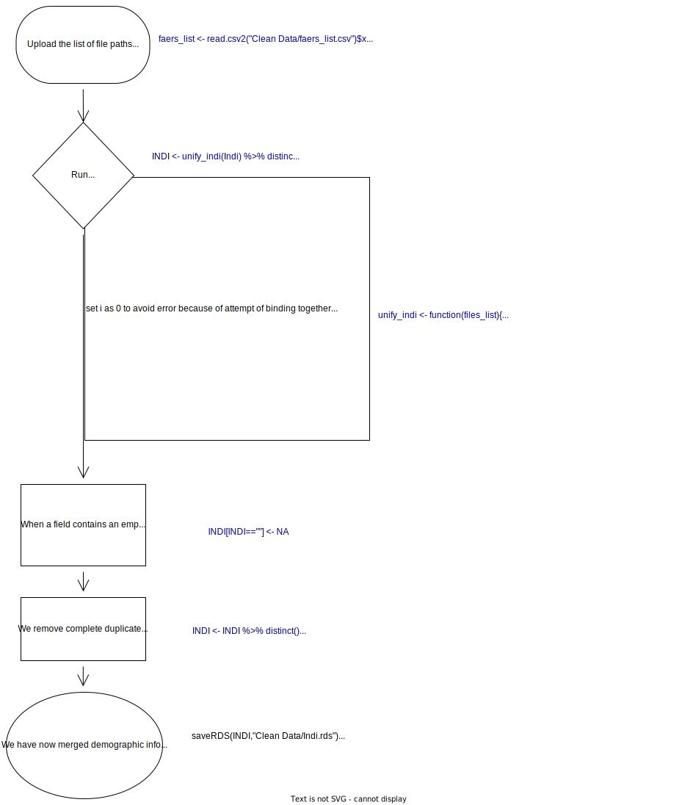

## Set up packages-------------------------------------------------------------
tools_needed <- c("tidyverse","data.table","janitor","foreach","xml2","rvest")
tools_to_install <- tools_needed[
!(tools_needed %in% installed.packages()[,"Package"])]
if(length(tools_to_install)>0) install.packages(tools_to_install)
invisible(lapply(tools_needed, library, character.only = TRUE))Documentation
Quarterly Data Features
Quarterly data files of the Food and Drug Administration Adverse Event Reporting System can be downloaded from the address https://fis.fda.gov/extensions/FPD-QDE-FAERS/FPD-QDE-FAERS.html, both in ASCII and XML format. We work on the ASCII files, which delimits different fields by the “$” character. Neither of the two formats are intended to include all the possible data fields. All the information can be obtained through the Freedom of Information Act, referring to “CASE” field for LAERS ASCII files and “CASEID” for FAERS ASCII files.
Each year data is divided into four quarters: January-March, April-June, July-September, October-December. The first quarter of the FAERS is January-March 2004, but it includes also older reports. Each quarter is fractioned into the following datasets:
DEMO (demographic and administrative information)
DRUG (medical products and posology)
REAC (adverse events)
OUTC (outcomes)
RPSR (report sources)
THER (temporal information about therapies)
INDI (indications)
The name of each file is thus composed <file-descriptor>yyQq, where <file-descriptor> is the 4-letter dataset name already mentioned, ‘yy’ is a 2-digit identifier for the year, ‘Q’ is the letter Q, and ‘q’ is a 1-digit identifier for the quarter. As an example, DEMO12Q4 represents demographic file for the 4th quarter of 2012. The set of seven ASCII data files in each extract contains data for the full quarter covered by the extract. From 19Q1, quarters also have a DELETED file: a list of identities of reports that should be excluded from the database, according to FDA or Manufacturers, because of various reasons and with the aim to align the QDE to public dashboard.
Data fields have been updated through time, and September 2012 (12Q3) marks the conversion from the Legacy Adverse Event Reporting System to the new FDA Adverse Event Reporting System (FAERS). To avoid the loss of reports, the first extract also includes reports from July 2012.
The previous LAERS database was Individual Safety Report based, with each ISR representing a separate version of a Case (e.g., Initial, Follow-up 1, Follow-up 2...). The new FAERS database is Case based, with one or more versions beginning from 1 (intermediate versions can be missing if multiple updates were reported during the same quarter).
It is important to note that LAERS data was compiled in upper case, while FAERS data is in mixed case.

This is the Entity Relationship Diagram of the new FAERS, with each primaryid identifying a specific version of a caseid. The primaryid key joins DEMO, REAC, OUTC, RPSR and DRUG, while the combination of primaryid and drug_seq joins THER and INDI to DRUG. Therefore, in DEMO we should have only one primaryid and sometimes more caseids, while in the other Dataset the same primaryid can spread on multiple rows (e.g., multiple reactions or outcomes or drugs…).
Cleaning pipeline
Here we describe step by step the cleaning procedure. Note that you don’t need to understand what is happening at each line of code to have a cleaned database and you can simply run the script (you can also use the already cleaned database). Nonetheless, it is important to read the text accompanying the script to understand how the pre-processing is impacting on the following analysis. The script should be included, together with the project, in a folder called DIANA.
It is important to have access to an internet connection because the script downloads the needed tools and the FAERS quarterly data from the internet.
1. Set up packages
Some tools are needed to perform the analyses. R is open-source software that allows the sharing of so-called packages of algorithms to perform specific operations. To clean the FAERS we use the following libraries:
tidyverse: a collection of R packages designed for data science.
data.table: package built to perform fast aggregation of extensive data.
janitor: package created to help clean dirty data.
foreach: package built to perform loops in parallel. Shortens preprocessing time.
xml2: package built to perform operations on XML.
rvest: package built to scrape the internet and download files.

2. Download FAERS
We included a script to automatically download FAERS quarterly data (ascii files) from the FDA website. This step can take different times depending on Internet and memory speed. During our tests it took from 1h25 (74.4 Mbps) to 2h (8.68 Mbps), but shorter or longer times are admissible.

## Download FAERS--------------------------------------------------------------
options(timeout=500)#increase if it times out because of low wifi power
FAERS_url <- "https://fis.fda.gov/extensions/FPD-QDE-FAERS/FPD-QDE-FAERS.html"
pg <- read_html(FAERS_url)
links_to_QD <- html_attr(html_nodes(pg, "a"), "href")
links_to_QD <- links_to_QD[grepl(".zip",links_to_QD)]
links_to_QD <- links_to_QD[grepl("ascii",links_to_QD)]
dir.create("Raw_FAERS_QD")
for (file in links_to_QD){
zip_name <- file.path("Raw_FAERS_QD", basename(file))
download.file(file, zip_name)
folder_name <- gsub(".zip","",zip_name)
dir.create(folder_name)
unzip(zip_name,exdir=folder_name)
file.remove(zip_name)
}
file.rename("Raw_FAERS_QD//faers_ascii_2018q1/ascii/DEMO18Q1_new.txt","Raw_FAERS_QD//faers_ascii_2018q1/ascii/DEMO18Q1.txt")3. Improve storage
In each TXT ASCII file, entries are separated by a $ sign. These datasets were imported and saved to the RDS format to reduce memory usage. Better storage allows to occupy less memory on the computer and makes it faster to read and write files.
When importing for the first time, some # signs and single quotes or apostrophe signs (’) conflicted with the import. Furthermore, the header lines and the data lines had an inconsistent number of fields, due to a missing $ sign at the end of the header line, which caused improper data reading. Finally, the following errors occurred and required manual integration of the files:
In DRUG2011Q2 there was a missing newline at line 322966
In DRUG2011Q3 there was a missing newline at line 247895
In DRUG2011Q4 there was a missing newline at line 446737
Our script now allows overcoming these errors and conflicts.

##Improve storage--------------------------------------------------------------
faers_list <- list.files(path="D:/Utenti/Vale/Desktop/DIANA-on-FAERS/DIANA/Raw_FAERS_QD/",
recursive=T,pattern=".TXT",
ignore.case = T, full.names = T)
faers_list <- faers_list[!str_detect(faers_list,"STAT") &
!str_detect(faers_list,"SIZE")]
#dir.create("Clean Data")
write.csv2(faers_list, "D:/Utenti/Vale/Desktop/DIANA-on-FAERS/DIANA/Clean Data/faers_list.csv")
##correct for missing newlines in 3 txt files
problematic_file <- file("D:/Utenti/Vale/Desktop/DIANA-on-FAERS/DIANA/Raw_FAERS_QD//aers_ascii_2011q2/ascii/DRUG11Q2.txt", open = "r")
lines <- readLines(problematic_file)
lines <- unlist(strsplit(gsub("\\$\\$\\$\\$\\$\\$7475791","\\$\\$\\$\\$\\$\\$this_insertion_is_used_to_separate_lines7475791",lines),"this_insertion_is_used_to_separate_lines"))
writeLines(lines,con = "D:/Utenti/Vale/Desktop/DIANA-on-FAERS/DIANA/Raw_FAERS_QD//aers_ascii_2011q2/ascii/DRUG11Q2.txt")
problematic_file <- file("D:/Utenti/Vale/Desktop/DIANA-on-FAERS/DIANA/Raw_FAERS_QD//aers_ascii_2011q3/ascii/DRUG11Q3.txt", open = "r")
lines <- readLines(problematic_file)
lines <- unlist(strsplit(gsub("\\$\\$\\$\\$\\$\\$7652730","\\$\\$\\$\\$\\$\\$this_insertion_is_used_to_separate_lines7652730",lines),"this_insertion_is_used_to_separate_lines"))
writeLines(lines,con = "D:/Utenti/Vale/Desktop/DIANA-on-FAERS/DIANA/Raw_FAERS_QD//aers_ascii_2011q3/ascii/DRUG11Q3.txt")
problematic_file <- file("D:/Utenti/Vale/Desktop/DIANA-on-FAERS/DIANA/Raw_FAERS_QD//aers_ascii_2011q4/ascii/DRUG11Q4.txt", open = "r")
lines <- readLines(problematic_file)
lines <- unlist(strsplit(gsub("021487\\$7941354","021487\\$this_insertion_is_used_to_separate_lines7941354",lines),"this_insertion_is_used_to_separate_lines"))
writeLines(lines,con = "D:/Utenti/Vale/Desktop/DIANA-on-FAERS/DIANA/Raw_FAERS_QD//aers_ascii_2011q4/ascii/DRUG11Q4.txt")
store_to_rds <- function(f){
name <- gsub(".TXT",".rds",f, ignore.case = T)
print (name)
cn<- unlist(strsplit(readLines(file(f),n=1),split = "\\$"))
x <- read.table(f,skip=1,sep="$", comment.char = "",quote="",row.names = NULL)
colnames(x) <- cn
saveRDS(x,file=name)
closeAllConnections()
}
invisible(lapply(faers_list, store_to_rds))4. Merge quarters
We started to merge the quarters within each of the dataframe within the relational database, starting from the DEMO dataset, first for the LAERS and then for the FAERS data. Multiple conflicts emerged because of different variable names, not only between LAERS and FAERS, but also between different quarters from the FAERS. We reported both information about variables merged and excluded, and the step-by-step explanation for the script.
DEMO
In particular, within the merging process for the dataset DEMO the following steps were performed to provide a cleaner database without conflict:
variable “quarter” was created
variables “IMAGE”, “CONFID” and “DEATH_DT” were excluded (not included in the FAERS for privacy reasons) to comply with privacy guidelines
variables were renamed to avoid conflicts between LAERS and FAERS
FAERS’sex was obtained combining sex and gndr_cod variables
FAERS’reporter date was obtained combining “rept_dt” and ” rept_dt”
LAERS and FAERS were merged into a new dataset DEMO
Empty DEMO cells were converted to NA (not available) to facilitate then duplicate removal

faers_list <- read.csv2("D:/Utenti/Vale/Desktop/DIANA-on-FAERS/DIANA/Clean Data/faers_list.csv")$x
Demo <- faers_list[str_detect(faers_list,regex("demo",ignore_case = T))]
unify_demo <- function(files_list){
i <- 0
# fixing inconsistencies in column names between LAERS and FAERS
namekey <- c(ISR="primaryid",CASE="caseid",FOLL_SEQ="caseversion",
I_F_COD="i_f_cod",EVENT_DT="event_dt",
MFR_DT="mfr_dt",FDA_DT="fda_dt",REPT_COD="rept_cod",
MFR_NUM="mfr_num",MFR_SNDR="mfr_sndr",
AGE="age",AGE_COD="age_cod",GNDR_COD="sex",E_SUB="e_sub",
WT="wt",WT_COD="wt_cod",
REPT_DT="rept_dt", OCCP_COD="occp_cod",TO_MFR="to_mfr",
REPORTER_COUNTRY="reporter_country",quarter="quarter",
i_f_code="i_f_cod")
foreach (f=files_list) %do%
{name <- gsub(".TXT",".rds",f, ignore.case = T)
print(name)
x <- readRDS(name)
x <- x[!is.na(names(x))]
quart <- substr(name, nchar(name)-7, nchar(name)-4)
x <- setDT(x)[,quarter:=quart]
names(x) <- namekey[names(x)]
if(i>0){y <- rbindlist(list(y,x),fill = TRUE)}else{y <- x}
i <- i+1
}
return(y)
}
DEMO <- unify_demo(Demo)
DEMO$rept_dt <- ifelse(is.na(DEMO$rept_dt),
DEMO$` rept_dt`,
DEMO$rept_dt)
DEMO$sex <- ifelse(test=is.na(DEMO$sex),
as.character(DEMO$gndr_cod),
as.character(DEMO$sex))
DEMO <- DEMO %>% select(-c(IMAGE,
DEATH_DT,
CONFID,
gndr_cod,
` rept_dt`))
DEMO[DEMO==""] <- NA
saveRDS(DEMO,"D:/Utenti/Vale/Desktop/DIANA-on-FAERS/DIANA/Clean Data/DEMO.rds")


DRUG
In particular, within the merging process for the dataset DRUG the following steps were performed to provide a cleaner database without conflict:
variables were renamed to avoid conflicts between LAERS and FAERS
“lot num” was completed with the information coming from “lot_nbr”
LAERS and FAERS were merged into a new dataset DRUG (including only general information about which drugs and the suspect degree) and a new dataset DRUG_INFO (including details about doses, formulations, dechallenge, and routes). Both these datasets kept the primary (primaryid) and secondary key (drug_seq)
Empty cells were converted to NA (not available) to facilitate then duplicate removal

faers_list <- read.csv2("D:/Utenti/Vale/Desktop/DIANA-on-FAERS/DIANA/Clean Data/faers_list.csv")$x
Drug <- faers_list[str_detect(faers_list,regex("drug",ignore_case = T))]
unify_drug <- function(files_list){
i <- 0
namekey <- c(ISR="primaryid",DRUG_SEQ="drug_seq",ROLE_COD="role_cod",
DRUGNAME="drugname",VAL_VBM="val_vbm",ROUTE="route",
DOSE_VBM="dose_vbm",DECHAL="dechal",
RECHAL="rechal",LOT_NUM="lot_num",NDA_NUM="nda_num",
EXP_DT="exp_dt")
foreach (f=files_list) %do%
{name <- gsub(".TXT",".rds",f, ignore.case = T)
print(name)
x <- readRDS(name)
x <- x[!is.na(names(x))]
x <- setDT(x)
names(x) <- namekey[names(x)]
cols <- colnames(x)[colnames(x)%in%c("primaryid","drug_seq","role_cod",
"drugname","prod_ai")]
x <- x[,..cols]
if(i>0){y <- rbindlist(list(y,x),fill = TRUE)}else{y <- x}
i <- i+1
}
return(y)
}
DRUG <- unify_drug(Drug) %>% distinct()
DRUG[DRUG==""] <- NA
DRUG <- DRUG %>% distinct()
saveRDS(DRUG,"D:/Utenti/Vale/Desktop/DIANA-on-FAERS/DIANA/Clean Data/Drug.rds")
rm(DRUG)
unify_drug_info <- function(files_list){
i <- 0
namekey <- c(ISR="primaryid",DRUG_SEQ="drug_seq",ROLE_COD="role_cod",
DRUGNAME="drugname",
VAL_VBM="val_vbm",ROUTE="route",DOSE_VBM="dose_vbm",DECHAL="dechal",
RECHAL="rechal",LOT_NUM="lot_num",NDA_NUM="nda_num",EXP_DT="exp_dt")
foreach (f=files_list) %do%
{name <- gsub(".TXT",".rds",f, ignore.case = T)
print(name)
x <- readRDS(name)
x <- x[!is.na(names(x))]
x <- setDT(x)
names(x) <- namekey[names(x)]
cols <- colnames(x)[colnames(x)%in%c("primaryid","drug_seq",
"val_vbm","route","dose_vbm",
"dechal","rechal","lot_nbr",
"lot_num","nda_num",
"cum_dose_unit","cum_dose_chr",
"dose_amt",
"dose_unit","dose_form","dose_freq",
"exp_dt")]
x <- x[,..cols]
if(i>0){y <- rbindlist(list(y,x),fill = TRUE)}else{y <- x}
i <- i+1
}
return(y)
}
DRUG_INFO <- unify_drug_info(Drug)
DRUG_INFO[DRUG_INFO==""] <- NA
DRUG_INFO <- DRUG_INFO %>% distinct()
DRUG_INFO$lot_num <- ifelse(!is.na(DRUG_INFO$lot_nbr)&DRUG_INFO$lot_nbr!="",
DRUG_INFO$lot_nbr,
DRUG_INFO$lot_num)
DRUG_INFO <- DRUG_INFO %>% select(-lot_nbr)
saveRDS(DRUG_INFO,"D:/Utenti/Vale/Desktop/DIANA-on-FAERS/DIANA/Clean Data/Drug_Info.rds")
rm(DRUG_INFO)The information included in the DRUG database was stored in two different data frames for storage convenience. One with general information (in white) and one with details doses, lot and expiration dates (in blue).


INDI
In particular, within the merging process for the dataset INDI the following steps were performed to provide a cleaner database without conflict:
variables were renamed to avoid conflicts between LAERS and FAERS
LAERS and FAERS were merged into a new dataset INDI
Empty cells were converted to NA (not available) to facilitate then duplicate removal
Rows with no reported indication were removed

faers_list <- read.csv2("D:/Utenti/Vale/Desktop/DIANA-on-FAERS/DIANA/Clean Data/faers_list.csv")$x
Indi <- faers_list[str_detect(faers_list,regex("indi",ignore_case = T))]
unify_indi <- function(files_list){
i <- 0
namekey <- c(ISR="primaryid",DRUG_SEQ="drug_seq",INDI_PT="indi_pt",
indi_drug_seq="drug_seq")
foreach (f=files_list) %do%
{name <- gsub(".TXT",".rds",f, ignore.case = T)
print(name)
x <- readRDS(name)
x <- x[!is.na(names(x))]
quart <- substr(name, nchar(name)-7, nchar(name)-4)
x <- setDT(x)[,quarter:=quart]
names(x) <- namekey[names(x)]
cols <- colnames(x)[colnames(x)%in%c("primaryid","drug_seq",
"indi_pt")]
x <- x[,..cols]
if(i>0){y <- rbindlist(list(y,x),fill = TRUE)}else{y <- x}
i <- i+1
}
return(y)
}
INDI <- unify_indi(Indi) %>% distinct()
INDI[INDI==""] <- NA
INDI <- INDI %>% distinct()
INDI <- INDI[!is.na(indi_pt)]
saveRDS(INDI,"D:/Utenti/Vale/Desktop/DIANA-on-FAERS/DIANA/Clean Data/Indi.rds")
rm(INDI)
OUTC
In particular, within the merging process for the dataset OUTC the following steps were performed to provide a cleaner database without conflict:
variables were renamed to avoid conflicts between LAERS and FAERS
LAERS and FAERS were merged into a new dataset OUTC
Empty cells were converted to NA (not available) to facilitate then duplicate removal
Rows with no reported outcome were removed
Outc <- faers_list[str_detect(faers_list,regex("outc",ignore_case = T))]
unify_Outc <- function(files_list){
i <- 0
namekey <- c(ISR="primaryid",OUTC_COD="outc_cod")
foreach (f=files_list) %do%
{name <- gsub(".TXT",".rds",f, ignore.case = T)
print(name)
x <- readRDS(name)
x <- x[!is.na(names(x))]
quart <- substr(name, nchar(name)-7, nchar(name)-4)
x <- setDT(x)[,quarter:=quart]
names(x) <- namekey[names(x)]
cols <- colnames(x)[colnames(x)%in%c("primaryid","outc_cod","outc_code")]
x <- x[,..cols]
if(i>0){y <- rbindlist(list(y,x),fill = TRUE)}else{y <- x}
i <- i+1
}
return(y)
}
OUTC <- unify_Outc(Outc) %>% distinct()
OUTC[OUTC==""] <- NA
OUTC$outc_cod <- ifelse(is.na(OUTC$outc_cod),
OUTC$outc_code,
OUTC$outc_cod)
OUTC <- OUTC %>% select(-outc_code)
OUTC <- OUTC[!is.na(outc_cod)] %>% distinct()
OUTC$outc_cod <- as.factor(OUTC$outc_cod)
saveRDS(OUTC,"D:/Utenti/Vale/Desktop/DIANA-on-FAERS/DIANA/Clean Data/Outc.rds")
rm(OUTC)REAC
RPSR
THER